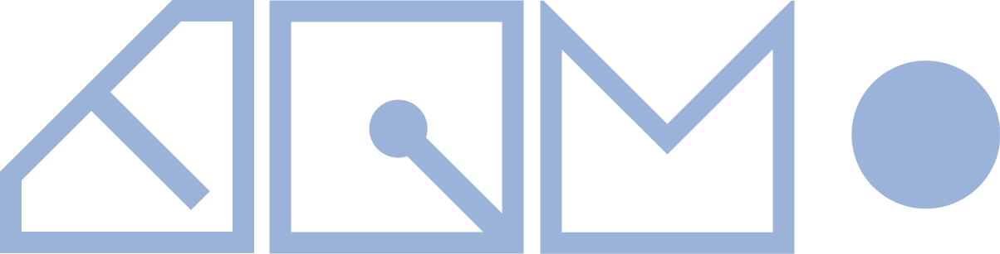
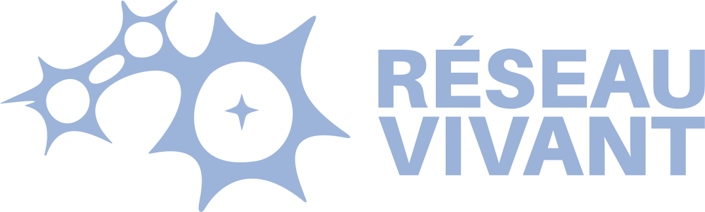
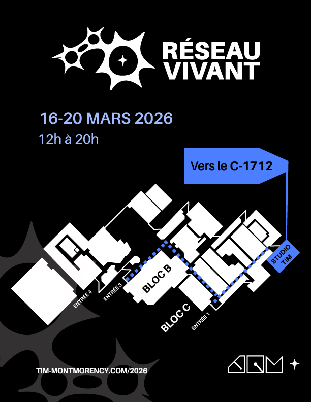

Exposition des finissantes et des finissants du programme de Techniques d'intégration multimédia
Réseau vivant explore la connectivité et les expériences partagées, se déployant comme une toile vivante tissée d'échanges, de gestes, de données et d'émotions.
Cette thématique est au cœur de l’exposition collective des finissantes et finissants en Techniques d’intégration multimédia du Collège Montmorency, qui présentent l’aboutissement de leur parcours commun, mettant en lumière les compétences développées et les liens tissés au fil de leur formation. Par sa présence, ses actions et ses choix, le public contribue à l'évolution du réseau et des œuvres mises en scène.
- Vernissage : mardi 17 mars à 18 h 30
- Exposition : du 16 au 20 mars 2026, de 12 h à 20 h
- Lieu : Grand studio C-1712, Collège Montmorency
Entrée gratuite. Bienvenue à toutes et à tous !

